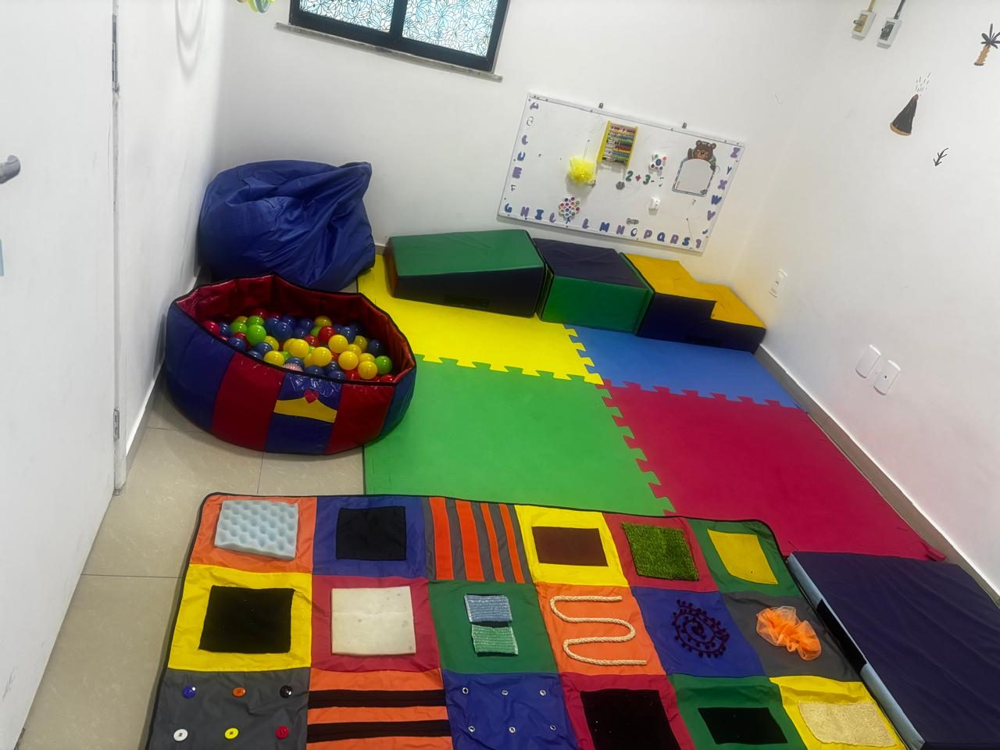
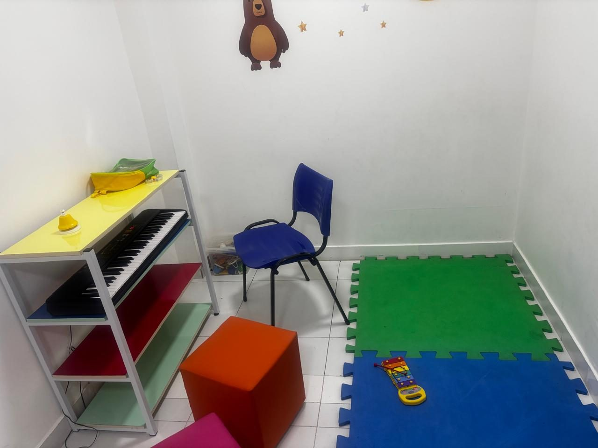
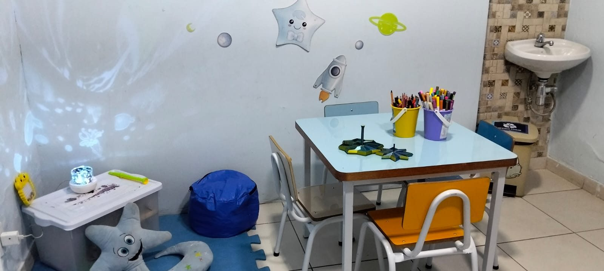
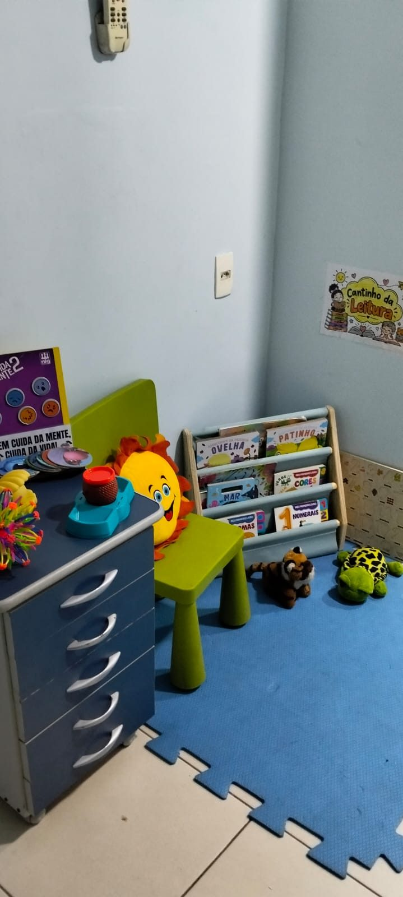
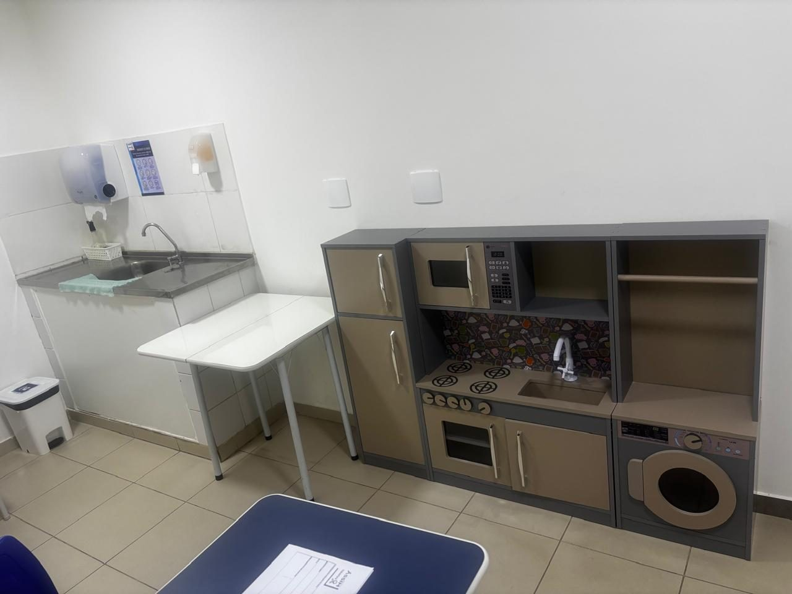
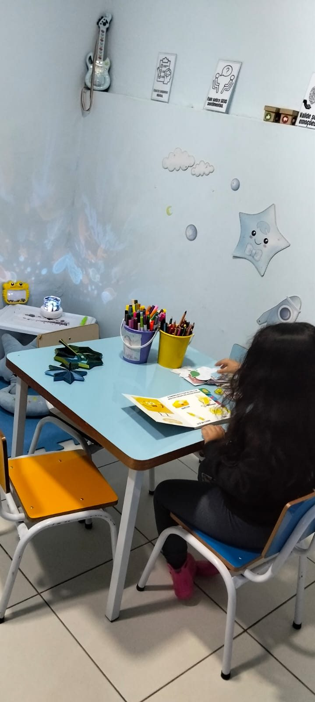
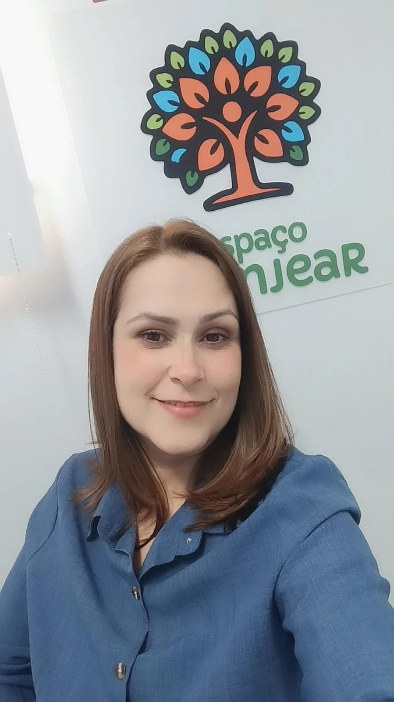

Cuidado integrado para desenvolver habilidades, ampliar possibilidades e transformar vidas.
Clínica multidisciplinar para crianças, adolescentes e adultos, com atuação especial em autismo, TDAH, atrasos de fala e desenvolvimento.
- 2016 em atividade desde
- 56 profissionais
- 8 especialidades
- 4 unidades
Convênios Assim Saúde, Petrobras e AMEP Saúde · Atendimento por reembolso · Particular em Xerém
Atendemos cada pessoa no seu ritmo
Mais do que terapias isoladas, olhamos para o paciente por inteiro: suas necessidades clínicas, familiares, escolares e sociais.
- Transtorno do Espectro Autista (TEA)
- TDAH
- Atrasos no desenvolvimento infantil
- Atrasos de fala e linguagem
- Transtornos da comunicação
- Dificuldades de aprendizagem
- Dificuldades de interação social
- Alterações sensoriais e motoras
- Paralisia cerebral
- Síndromes e condições neurológicas
- Disfagia e alterações de deglutição
- Necessidades clínicas complexas
Primeira infância
Estimulação precoce e atrasos no desenvolvimento.
Crianças e adolescentes
TEA, TDAH, aprendizagem, linguagem.
Adultos e idosos
Comunicação, alimentação, deglutição e condições neurológicas.
Oito especialidades, um só plano de cuidado
Toque em cada folha para ver as áreas de atuação completas.
Também oferecemos
Do primeiro contato ao acompanhamento contínuo
Acolhimento
Escutamos a família, entendemos a demanda e fazemos a entrevista inicial (anamnese).
Avaliação
Avaliamos as necessidades do paciente e definimos quais especialidades são indicadas.
Plano e atendimento
Construímos um plano terapêutico individualizado e iniciamos os atendimentos.
Acompanhamento
Registramos a evolução, orientamos a família, reavaliamos objetivos, emitimos relatórios e, com autorização, conversamos com escola e médicos.
Por que famílias e parceiros escolhem o Granjear
-
Equipe multidisciplinar integrada
As especialidades conversam entre si e definem objetivos em conjunto.
-
Plano terapêutico individualizado
Construído a partir do quadro clínico, das habilidades e das prioridades da família.
-
Objetivos funcionais
Foco no que faz diferença no dia a dia, como se comunicar, participar das rotinas, alimentar-se com segurança e ter autonomia.
-
Evolução acompanhada
Registros, avaliações periódicas e relatórios de evolução.
-
Experiência em neurodesenvolvimento
Autismo, TDAH, linguagem, aprendizagem e questões sensoriais, com supervisão baseada em ABA.
-
Segurança e boas práticas
Biossegurança, privacidade, prontuários organizados e respeito às normas de cada conselho profissional.

Atendimento em dupla, quando indicado
Quando a avaliação clínica indica, duas crianças com perfis compatíveis praticam juntas interação, comunicação, atenção compartilhada, turnos, cooperação e flexibilidade — habilidades que só se treinam com outra pessoa. As duplas são formadas por idade, perfil clínico, nível de desenvolvimento e objetivos terapêuticos. O formato é sempre definido pela equipe: quando o caso pede, o atendimento é individual.
Uma operação que cresce com a confiança das famílias
Evolução dos atendimentos na unidade Botafogo ao longo de 2026.
| Especialidade | Atend. | Prof. |
|---|---|---|
| Psicologia | 666 | 4 |
| Psicopedagogia | 568 | 3 |
| Terapia Ocupacional | 513 | 5 |
| Fonoaudiologia | 467 | 4 |
| Psicomotricidade | 317 | 2 |
| Musicoterapia | 208 | 2 |
| Terapia Alimentar | 48 | 1 |
| Fisioterapia | 14 | 1 |
| Total | 2.801 | 22 |
Conheça as unidades e os atendimentos
Ambientes pensados para acolher, com materiais terapêuticos e equipe presente em cada etapa.





O que dizem as famílias
Mensagens deixadas por famílias atendidas e resultados da nossa pesquisa de satisfação.
-
Quero deixar um elogio para as meninas da recepção, sempre atenciosas, com sorriso no rosto, e isso conta demais. Às profissionais, todo o meu carinho pelo acolhimento e suporte.
Mãe de paciente -
Só tenho a agradecer a toda a equipe da clínica pelo excelente trabalho com o meu filho. Vocês são nota 1000.
Mãe de paciente -
Só tenho elogios a toda a equipe do Espaço Granjear. Agradeço demais todo o carinho, profissionalismo e dedicação.
Mãe de paciente -
Com todo o meu carinho e coração, quero agradecer a vocês do Espaço Granjear por suprirem a necessidade do meu filho.
Mãe de paciente
Pesquisa de satisfação respondida por 37 famílias em 2026. Depoimentos publicados com autorização das famílias.
Vocês fazem parte do cuidado
Vocês fazem parte do tratamento
- Escuta e acolhimento
- Orientação sobre o desenvolvimento
- Explicação dos objetivos
- Atividades para continuar em casa
- Devolutivas e relatórios periódicos
- Orientação parental
- Apoio na organização das rotinas
A inclusão continua na sala de aula
- Reuniões com a equipe escolar
- Orientação aos professores
- Estratégias de inclusão
- Acompanhamento Terapêutico escolar
- Observação do aluno
- Adaptação de atividades
- Palestras e capacitações
Perto de você no Rio e na Baixada
Segunda a sexta, das 8h às 17h. Atendimento particular, por convênios e parcerias institucionais.
Xerém Unidade principal
Rua Décio de Oliveira, 86 — Xerém, Duque de Caxias/RJ · CEP 25250-620
Seg. a sex., 8h–17h
Convênios · Particular · Acessível · Sem estacionamento próprio
Como chegarCentro de Duque de Caxias
R. Dep. Ampliato Cabral, 151 — Jardim Vinte e Cinco de Agosto, Duque de Caxias/RJ · CEP 25070-370
Seg. a sex., 8h–17h
Convênios · Acessível · Sem estacionamento próprio
Como chegarSão Cristóvão
R. Chaves Faria, 64 — Imperial de São Cristóvão (no Hospital Memorial), Rio de Janeiro/RJ · CEP 20910-140
Seg. a sex., 8h–17h
Convênios · Acessível · Sem estacionamento próprio
Como chegarBotafogo
Rua Muniz Barreto, 535 — Centro Médico Amiu, Botafogo, Rio de Janeiro/RJ · CEP 22251-090
Seg. a sex., 8h–17h
Convênios · Acessível · Sem estacionamento próprio
Como chegarQuem conduz o Espaço Granjear

Vivian Bighi
CEO e fundadora
Especialista em Autismo (PUC-Rio); Neurociência, Educação e Desenvolvimento Infantil (PUC-RS); Psicomotricista; Psicopedagoga.
ABPp 1495 · ABP 02 228 459
Falar com a VivianJanaina Moraes
Responsável Técnica e fundadora
Fonoaudióloga; Especialista em Autismo (PUC-Rio); Especialista em Análise do Comportamento Aplicada (ABA); Supervisora ABA.
CRFa 9851
Falar com a JanainaPara operadoras, escolas, empresas e órgãos públicos
Construímos projetos personalizados de atendimento, com organização técnica, relatórios de evolução e comunicação com a rede de apoio. Queremos ser um parceiro estratégico, não apenas um prestador de serviços.
- Credenciamento para atendimento terapêutico
- Pacotes multidisciplinares
- Programas de estimulação precoce
- Apoio à inclusão escolar
- Acompanhamento Terapêutico
- Atendimento domiciliar
- Avaliações multidisciplinares
- Atendimento de demandas reprimidas
- Palestras e capacitações
- Projetos de responsabilidade social
Unidade Botafogo, agosto/2026. Dados consolidados internamente, atualizados a cada 3 meses.
Atuamos em parceria com a Rede Rio de Medicina (Grupo Assim), Assim Medical e Centro Médico Amiu. Também levamos palestras a escolas da região e a igrejas.
Perguntas frequentes
Preciso ter diagnóstico fechado para agendar? +
Como funciona o acolhimento inicial? +
Vocês atendem por convênio? Quais? +
Qual a idade mínima e máxima atendida? +
Como é definido quais terapias meu filho vai fazer? +
O que é o atendimento em dupla? +
Meu filho pode fazer terapia individual? +
Meu filho vai ficar sempre com o mesmo terapeuta? +
As unidades têm estacionamento? +
Vocês fazem atendimento na escola ou em casa? +
Recebo relatórios da evolução? +
Vamos conversar sobre o desenvolvimento de quem você cuida?
O primeiro passo é um acolhimento: escutamos você e explicamos como podemos ajudar.
Falar no WhatsApp